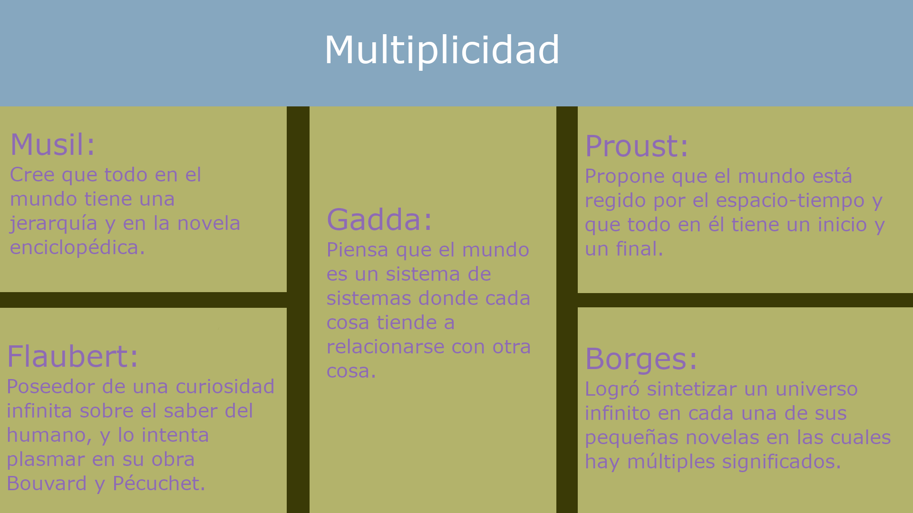

Audiovisual

Este es un mapa de la multiplicidad que se basa en el libro "la multiplicidad" escrito por Italo Calvino.
Ejercicio de clase de visualización 3D con respecto a la música.
Música hecha a partir de la partitura de Andrés Cendales.
Cubos en 3D hechos en after effect.

Storyboard para la animación de la partitura
Animación hecha a partir de la partitura de Alejandro.